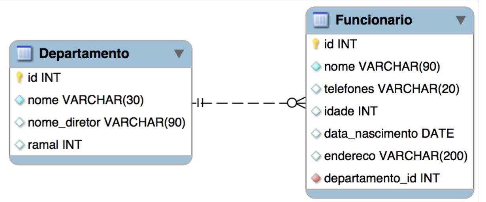
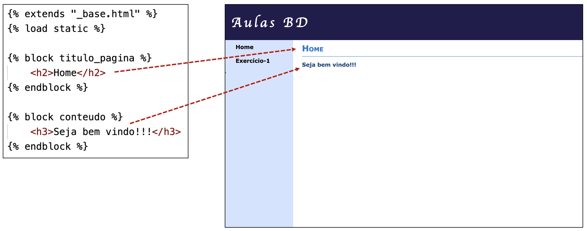
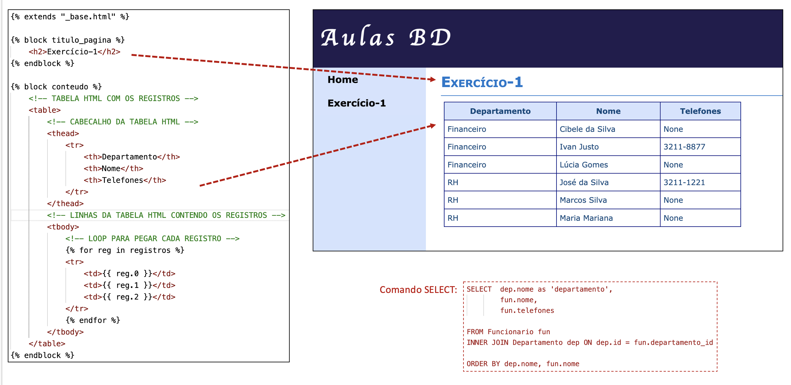
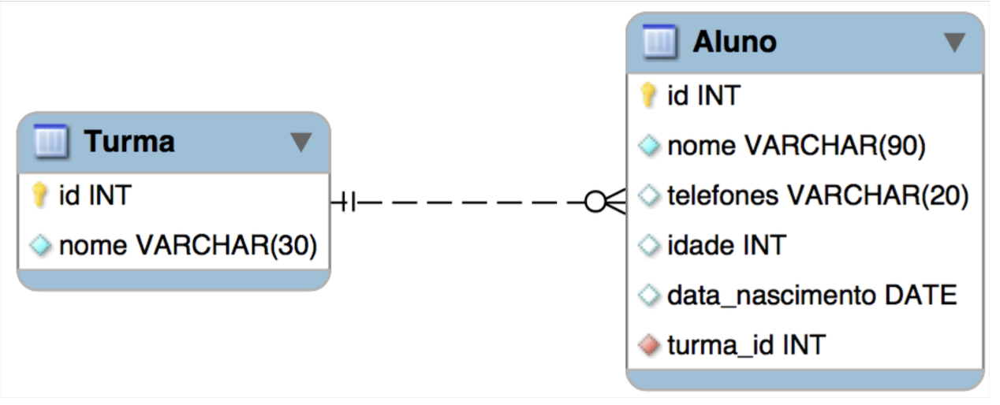
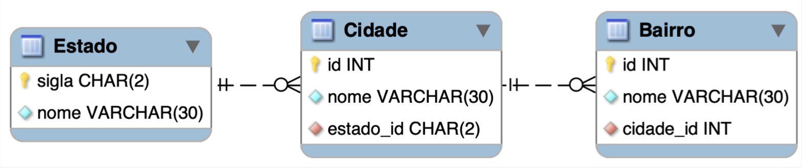
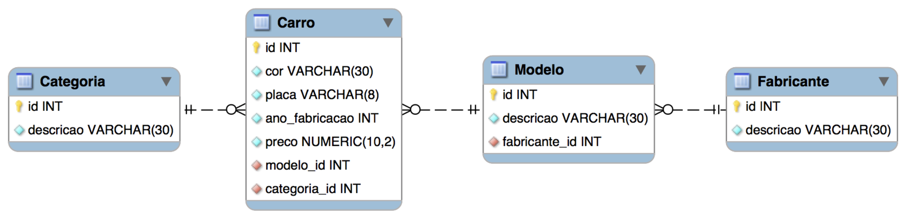

Instruções deste Projeto
1) Preparação do Ambiente de Desenvolvimento
Abra o terminal de comandos (prompt) e execute o comando a seguir para listar os pacotes do Python que estão instalados no seu computador:
pip list
Para esta aula precisaremos que os pacotes Django e pyodbc estejam instalados.
Caso algum deles não esteja instalado, execute os comandos a seguir:
pip install Django
pip install pyodbc
2) Criando o Banco de Dados
A primera coisa que iremos fazer será criar o banco de dados.
Abra o MSSQL Management Studio e crie um banco de dados chamado Aulas_BD.
OBS: Caso o banco de dados Aulas_BD já exista no seu computador, exclua-o e crie-o novamente antes de continuar. Isto é importante para não haja coflito com tabelas já existentes.
Em seguida, crie as tabelas conforme o DER a seguir:

Neste primeiro exercício, iremos disponibilizar os comandos SQL de criação das tabelas.
Nos próximos exercícios, você mesmo terá criar os comandos SQL.
CREATE TABLE Departamento(
id int identity(1,1) not null,
nome varchar(30) not null,
nomeDiretor varchar(90),
ramal int,
primary key(id)
)
CREATE TABLE Funcionario(
id int identity(1,1) not null,
nome varchar(90) not null,
telefones varchar(20),
idade int,
dataNascimento date,
endereco varchar(200),
departamento_id int not null,
primary key(id),
FOREIGN KEY(departamento_id) REFERENCES Departamento(id)
)
Neste primeiro exercício, iremos também disponibilizar os comandos SQL para inclusão dos registros nas tabelas.
Inclusão de registros na tabela Departamento:
INSERT INTO Departamento(nome, nomeDiretor, ramal) VALUES ('RH', 'José da Silva', 3001)
INSERT INTO Departamento(nome, nomeDiretor, ramal) VALUES ('Financeiro', 'Maria José', 3022)
INSERT INTO Departamento(nome, nomeDiretor, ramal) VALUES ('Compras', 'João', 3311)
Inclusão de registros na tabela Funcionario:
INSERT INTO Funcionario(nome, telefones, idade, dataNascimento, endereco, departamento_id)
VALUES ('José da Silva', '3211-1221', 17, '19920325', 'Rua São José, 1221', 1)
INSERT INTO Funcionario(nome, telefones, idade, dataNascimento, endereco, departamento_id)
VALUES ('Maria Mariana', null, 16, '19910301', 'Av. Hermes da Fonseca, 121', 1)
INSERT INTO Funcionario(nome, telefones, idade, dataNascimento, endereco, departamento_id)
VALUES ('Marcos Silva', null, null, null, null, 1)
INSERT INTO Funcionario(nome, telefones, idade, dataNascimento, endereco, departamento_id)
VALUES ('Ivan Justo', '3211-8877', 17, '20020825', 'Rua São João, 21', 2)
INSERT INTO Funcionario(nome, telefones, idade, dataNascimento, endereco, departamento_id)
VALUES ('Cibele da Silva', null, 16, '19991225', 'Av. Hermes da Fonseca, 121', 2)
INSERT INTO Funcionario(nome, telefones, idade, dataNascimento, endereco, departamento_id)
VALUES ('Lúcia Gomes', null, null, null, null, 2)
Pronto! Agora temos as tabelas criadas e os registros inseridos.
3) Analisando o Código do Projeto Django
Arquivo views.py
Primeiro definimos um método chamado obter_conexao() que será utilizado para obter a conexão com o banco de dados.
Dessa forma, separamos o código de conexão porque iremos reutilizá-lo em vários outros métodos que iremos criar posteriormente neste arquivo.
Em seguida, definimos um método chamado home() que será responsável por exibir a página inicial da nossa aplicação.
Esta página não contém dados vindos do BD, sendo que apenas exibirá uma mensagem de boas vindas.
Por fim, definimos o método exercicio_1() que será responsável por exibir a página contendo os dados retornados conforme o comando SQL SELECT que foi definido para o Exercício-1.
O SELECT pedido no exercício foi:
Fazer um SELECT para retornar: nome do departamento, nome do funcionário e telefones do funcionário, ordenados pelo nome do departamento e pelo nome do funcionário
Arquivo urls.py
No arquivo proj_bd/urls.py definimos 2 rotas URL que redirecionam a URL chamada no navegador para os métodos home() e exercicio_1() de app/views.py.
A rota que exibe a página Home foi definida com o primeiro parâmetro do método path() igual a vazio (''). Assim, esta rota será executada quando acessarmos a URL raiz da nossa aplicação no navegador, ou seja localhost:8000.
A rota que exibe a página Exercício-1 foi definida com o primeiro parâmetro do método path() igual a 'exercicio_1/'. Assim, esta rota será executada quando acessarmos a URL localhost:8000/exercicio_1 no navegador.
No segundo parâmetro de path() definimos qual método deve ser chamado pela rota.
Neste caso, as rotas foram configuradas como views.home e views.exercicio_1, as quais irão chamar, respectivamente, os métodos home() e exercicio_1() definidos em views.py.
Para ter acesso a views.home e views.exercicio_1 dentro de urls.py, lembre-se de fazer a importação do arquivo views.py através da instrução from app import views.
No terceiro parâmetro de path() definimos um nome (name) para as rotas, os quais serão usados para referenciá-las em outros lugares do nosso projeto (por exemplo, nos templates HTML).
4) As Páginas HTML da nossa Aplicação
No Django, as páginas HTML são definidas usando templates, que são arquivos de texto (geralmente em HTML) que definem a estrutura e a aparência da página.
Eles permitem exibir dados dinâmicos gerados no código Python, tornando as páginas interativas e personalizáveis.
Os templates devem ser criados dentro de uma pasta chamada templates que deve estar na pasta da nossa aplicação - no nosso caso é a pasta app/templates.
Os templates permitem criar uma estrutura de herança entre as páginas, fazendo com que os códigos HTML e CSS possam ser reutilizados, evitando assim a duplicação de código.
No nosso projeto definimos um template Pai chamado _base.html, o qual será herdado por todas as páginas da nossa aplicação.
É neste template Pai que definimos a estrutura e aparência geral das nossas páginas.
Definimos também alguns blocos dentro de _base.html através da instrução {% block ... %}.
Os blocos são áreas dentro do template Pai que podem ser substituídas por outros conteúdos
pelos templates Filhos.
As páginas renderizadas a partir do nosso template Pai (_base.html) terá a aparência da página exibida abaixo.
Perceba que foram definidas as seguintes áreas dentro da página: cabeçalho, menú de navegação e conteúdo.
No nosso projeto, foram criados 2 templates Filhos que herdam de _base.html, sendo um para página inicial (home.html) e outro para a página que irá exibir os registros do Exercício-1 (exercicio_1.html).
Template home.html:
Aqui informamos primeiramente de qual template iremos herdar através da instrução {% extends .... %}.
Depois usamos instruções
{% block ... %} para substituir o conteúdo dos blocos titulo_pagina e conteudo do template Pai pelas informações da página inicial.

Template exercicio_1.html:
Perceba que no bloco conteudo escrevemos o código que cria uma tabela HTML (<table>) e inserimos as informações do cabeçalho desta tabela (<th>).
Depois inserimos um loop (
{% for reg in registros %}) para exibir as informações de cada registro nas linhas da tabela usando as tags <tr> e <td>.
As instruções
{{reg.0}}, {{reg.1}} e {{reg.2}} irão retornar os valores dos campos na ordem em que eles foram definidos no comando SELECT, onde 0, 1 e 2 se referem aos índices do array de campos retornados pelo SELECT.
Dessa forma, reg.0 retornará o valor do campo descrição do departamento, reg.1 retornará o valor do campo nome do funcionário e reg.2 retornará o valor do campo telefones. Repare que os índices dos campos começam em 0.
Usamos
{{ .. }} para acessar as variáveis de contexto (context) dentro dos templates.
As variáveis de contexto são passadas através do método render() dentro dos métodos de views.py. Neste caso, o contexto foi definido como render(request, template, context={'registros': registros}) e, por isso, podemos acessar a variável registros dentro do template exercicio_1.html. Todas as variáveis definidas em context ficarão acessíveis dentro dos templates.
.

Perceba que na coluna Telefones aparecem alguns valores com o texto None.
Isto acontece porque este campo não é obrigatório e permite valores vazios (NULL).
Podemos resolver este problema alterando a instrução {{ reg.2 }} para {{ reg.2|default_if_none:'' }}.
A instrução |default_if_none:'' fará com que os valores vazios sejam substituídos por uma string vazia (''), evitando que o texto None apareça nas linhas da tabela.
Aqueles nomes das rotas URL que havíamos definido no terceiro parâmetro de path() em urls.py foram utilizados em _base.html para definir os links do menú de navegação através da instrução {% url ... %}.
5) Arquivos Estáticos
Podemos perceber que a nossa aplicação foi estilizada através do uso de CSS.
No Django podemos definir arquivos de CSS, Javascript e imagens dentro de uma pasta chamada static dentro da pasta da nossa aplicação (app).
Na pasta static do nosso projeto foram criados os arquivos site.css e barra-lateral.png, os quais foram carregados no nosso template Pai (_base.html).
Para podermos carregar estes os arquivos da pasta static, precisamos definir a instrução {% load static %} na primeira linha dos nossos templates Pais e/ou Filhos.
A inclusão do arquivo CSS em _base.html foi feita através da instrução href="{% static 'css/site.css' %}", onde static será substituído automaticamente pelo Django com o caminho correto da pasta que contém os arquivos estáticos.
A imagem barra-lateral.png foi utilizada dentro de site.css, sendo definida como background-image de <body>.
Assim, esta imagem foi carregada para ficar como fundo do menu de navegação lateral.
6) Demais Exercícios
Agora chegou a hora de você fazer os exercícios restantes.
Para cada exercício, você deverá:
- Criar os códigos SQL para criar as tabelas e inserir os registros usando o MSSQL Management Studio;
- Crie as tabelas dentro do banco de dados
Aula_BD; - Criar o método referente ao exercício em
views.py; - Criar os métodos
exercicio_2(),exercicio_3()etc; - Em cada método, insira o código para executar o comando SELECT conforme definido em cada exercício;
- Criar o template do exercício, o qual deve exibir os registros retornados pelo comando SELECT;
- Nomeie os templates da seguinte forma:
exercicio_2.html,exercicio_3.htmletc; - Criar as rotas URL dentro de
urls.py; - Atualizar o menú de navegação em
_base.htmlde modo a incluir o link (<a>) para exibir a página do exercício; - Testar a aplicação para verificar se está OK.
Exercício-2:

- Inserir 3 turmas com 10 alunos cada;
- Fazer um SELECT para retornar: nome da turma, nome do aluno e idade do aluno, ordenados pelo nome da turma e pelo nome do aluno.
Exercício-3:

- Inserir:
- 2 estados;
- 3 cidades para cada estado;
- 5 bairros para cada cidade;
- Fazer um SELECT para retornar: nome do estado, nome da cidade e nome do bairro, ordenados pelo nome do estado, da cidade e do bairro.
Exercício-4:

- Inserir:
- 4 categorias, sendo elas: Hatch, Sedã, Picape e Utilitário;
- 3 fabricantes;
- 3 modelos para cada fabricante;
- 3 carros para cada modelo;
- Fazer um SELECT para retornar os dados da tabela Carro, juntamente com as descrições sobre Categoria, Modelo e Fabricante.
- Ordenar o resultado por: descrição do fabricante, descrição do modelo e ano de fabricação do carro;
- A tabela da página HTML deverá exibir os campos abaixo, nesta ordem:
Fabricante Modelo Ano de Fabricação Cor Placa Preço Categoria